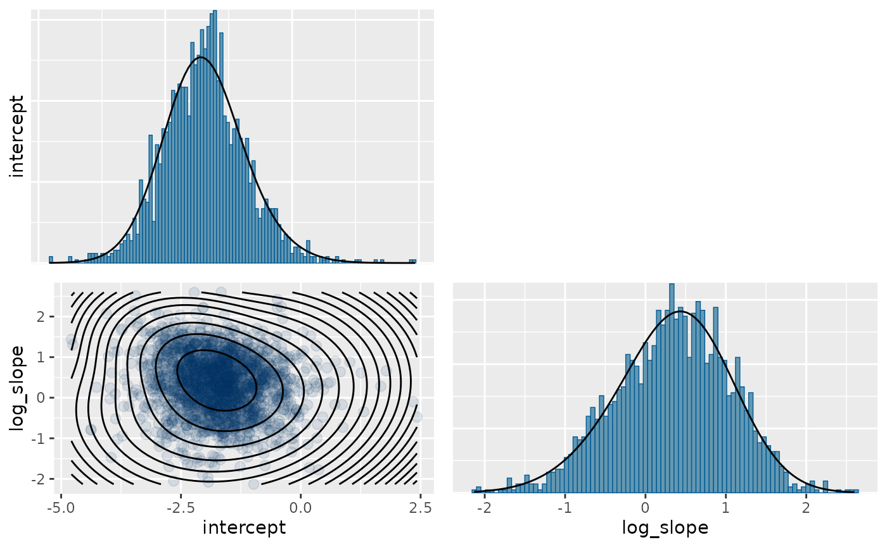
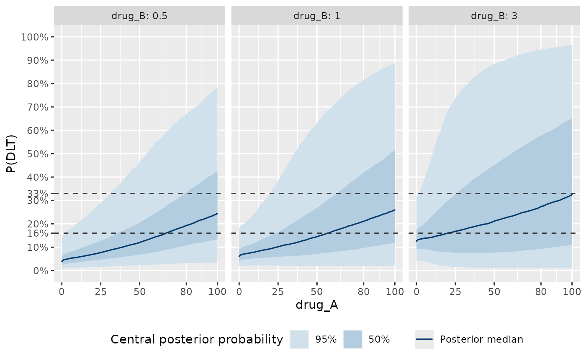

Meta-Analytic-Predictive (MAP) approach for dose-toxicity modelling
Andrew Bean, Sebastian Weber, Lukas Widmer
2025-10-17
Source:vignettes/map_approach.Rmd
map_approach.RmdIntroduction
A common characteristic of modern applications of the Bayesian Logistic Regression Model (BLRM) for model-based dose escalation is the availability of relevant historical data on the study treatment(s). For example, studies testing novel combination therapies may wish to incorporate available dose-toxicity data on the individual agents from single-agent dose escalation trials.
There are two broad categories for statistical approaches to this:
- Meta-Analytic Combined (MAC) approaches use a hierarchical model to jointly analyze both the historical data and data from the current study. External data from concurrently running trials may also be incorporated in such an approach. The introductory vignette illustrates this approach.
- Meta-Analytic Predictive (MAP) approaches involve two stages. In the first, an initial hierarchical model is estimated from the historical data, and from this model one extracts a posterior prediction for the trial-level parameters in a future trial. The posterior prediction is then approximated in parametric form which is used as MAP prior in the future trial.
These two approaches are statistically equivalent to each other (provided the parametric representation of the MAP prior is exact), but differ in the “modelling workflow.” While the MAC approach is a prospective approach enabling to include even concurrent data to borrow from, the MAP approach is retrospective in that the historical data is summarized once and usually taken as immutable and static. The MAP approach has the advantage when designing prospectively a future study that we can pre-specify (and hence document in a statistical analysis plan) the information borrowed from the historical data and the model used for the future study becomes structurally simpler, since there is often no more a need for a hierarchical model structure at that stage.
The recommended reference for more details on these approaches, how they relate to each other, and how they are applied in the dose-toxicity setting is explained in Neuenschwander et al (2016).
In this vignette, we illustrate the implementation of the MAP approach, and describe its usage for safety monitoring in a realistic application.
Initial R session setup:
Application background
We consider a case study involving a Phase-I dose-escalation study of a combination therapy of two compounds, drug A and drug B, in a population of adult patients with solid-tumor cancers. The primary objective of the study was to identify the Maximum Tolerated Dose (MTD) or Recommended Phase-2 Dose (RP2D) of the combination.
Historical data
In this application, each of the two compounds had previously been tested in single-agent Phase-I dose escalation studies. MTDs had been declared for each drug:
| Drug | Declared MTD |
|---|---|
| Drug A | 100mg |
| Drug B | 3mg |
These declarations had been made on the basis of the following dose-toxicity data from the two single-agent studies.
| Drug A | Evaluable patients | DLTs |
|---|---|---|
| 12.5 | 1 | 0 |
| 25.0 | 1 | 0 |
| 50.0 | 3 | 0 |
| 80.0 | 9 | 1 |
| 100.0 | 23 | 4 |
| 150.0 | 3 | 2 |
| Drug B dose | Evaluable patients | DLTs |
|---|---|---|
| 0.125 | 2 | 0 |
| 0.250 | 1 | 0 |
| 0.500 | 2 | 0 |
| 1.000 | 2 | 0 |
| 2.000 | 3 | 1 |
| 2.500 | 7 | 0 |
| 3.000 | 12 | 0 |
| 4.000 | 3 | 1 |
These data were understood to be highly relevant for informing prior beliefs about the single-agent contributions to the combination toxicity in the planned study. Therefore a MAP approach was taken to develop priors for the respective parameters - , , , and which are obtained by a meta-analysis of the historical data.
Derivation of MAP priors
In the MAP approach, we begin with meta-analytic hierarchical modelling of the historical data, accounting for the possibility of between-trial heterogeneity. It is important to note that this is done even for the case of a single historical study being available. The information on the between-trial heterogeneity relies in this case on the priors used for the heterogeneity. In practice log normal priors for the heterogeneity parameters based on the following table have worked well in many situations. The approach is to categorize the degree of heterogeneity between trials in terms of anticipated differences in the population and further factors which depend on a specific case:
| Heterogeneity degree | ||
|---|---|---|
| small | 0.125 | 0.0625 |
| moderate | 0.250 | 0.1250 |
| substantial | 0.500 | 0.2500 |
| large | 1.000 | 0.5000 |
| very large | 2.000 | 1.0000 |
Here we fit separate models to the historical drug-A and drug-B single-agent data. Note, equivalently, a single hierarchical double-combination model without any interaction could have been fit to those data, and would have produced the same MAP priors for the drug-level intercepts and slopes. A detailed specification of the models being fit below is given in the appendix.
In this example we assume that the historical data for drug A comes from a relatively different population (for example different line of therapy) and the historical data for drug B stems from a very closely related patient population. This translates into respective choices for the between-trial heterogeneity priors according to the table above.
Drug A model
Implementation of this meta-analysis of single-agent data is done
using blrm_exnex(). In order to obtain directly a sample of
the MAP prior, we set the sample_map argument to
TRUE.
# historical data for drug A
hist_A <- data.frame(
group_id = factor("trial_A"),
drug_A = c(12.5, 25, 50, 80, 100, 150),
num_patients = c(1, 1, 3, 9, 23, 3),
num_toxicities = c(0, 0, 0, 1, 4, 2)
)
# reference dose for drug A
dref_A <- 80
# bivariate normal prior for (intercept, log-slope)
prior_A <- mixmvnorm(c(1.0,
logit(0.2), 0,
diag(c(1, (log(4) / 1.96)^2 ))))
# between-trial heterogeneity is centered on "substantial"
tau_substantial_prior <- mixmvnorm(c(1.0,
log(c(0.5, 0.25)),
diag(rep(log(2) / 1.96, 2)^2)))
# fit the model to the historical data
map_model_A <- blrm_exnex(
cbind(num_toxicities, num_patients - num_toxicities) ~
1 + log(drug_A / dref_A) |
0 |
group_id,
data = hist_A,
prior_EX_mu_comp = list(prior_A),
prior_EX_tau_comp = tau_substantial_prior,
prior_EX_prob_comp = matrix(1, nrow = 1, ncol = 1),
prior_tau_dist = 1,
sample_map = TRUE
)Drug B model
Similarly, for drug B:
# historical data for drug B
hist_B <- data.frame(
group_id = factor("trial_B"),
drug_B = c(0.125, 0.25, 0.5, 1, 2, 2.5, 3, 4),
num_patients = c(2, 1, 2, 2, 3, 7, 12, 3),
num_toxicities = c(0, 0, 0, 0, 1, 0, 0, 1)
)
# reference dose
dref_B <- 1
# prior for (intercept, log-slope)
prior_B <- prior_A
# between-trial heterogeneity is centered on "small", but with a
# greater degree of uncertainty on this classification
tau_small_prior <- mixmvnorm(c(1.0,
log(c(0.125, 0.0625)),
diag(rep(log(4) / 1.96, 2)^2)))
# fit model to historical data
map_model_B <- blrm_exnex(
cbind(num_toxicities, num_patients - num_toxicities) ~
1 + log(drug_B / dref_B) |
0 |
group_id,
data = hist_B,
prior_EX_mu_comp = list(prior_B),
prior_EX_tau_comp = tau_small_prior,
prior_EX_prob_comp = matrix(1, nrow = 1, ncol = 1),
prior_tau_dist = 1,
sample_map = TRUE
)Extraction of MAP priors
We now illustrate how these meta-analytic model fits can be used to produce a parametric MAP prior for the new study intercepts and slopes.
MCMC samples
Since we called blrm_exnex with the
sample_map=TRUE argument, the posterior now contains the
respective MAP prior MCMC samples for "map_log_beta"
containing for each defined stratum (just one in our case) the MAP
priors in MCMC form for intercept and slope. Here we extract these as
rvar variables which simplifies working with the posterior
draws.
rvar_map_log_beta_A <- as_draws_rvars(map_model_A, variable="map_log_beta")$map_log_beta
rvar_map_log_beta_B <- as_draws_rvars(map_model_B, variable="map_log_beta")$map_log_betaThese are posteriors of 3-dimensional arrays with the dimensions stratum, drug component and coefficient. In the discussed example only a single stratum and single drug component (per fitted model) is present such that we directly select the respective entries of the array here (note that you may use names to access the respective entries in the array):
rvar_map_log_beta_A[1,"log(drug_A/dref_A)",,drop=TRUE]## rvar<500,4>[2] mean ± sd:
## intercept log_slope
## -1.73 ± 0.82 0.34 ± 0.72
rvar_map_log_beta_B[1,"log(drug_B/dref_B)",,drop=TRUE]## rvar<500,4>[2] mean ± sd:
## intercept log_slope
## -2.74 ± 0.62 -0.45 ± 0.53Mixture approximation
In order to leverage these MAP distributions in analyzing the new
combination study data, we need to operationalize them as parametric
prior distributions for the combination model. This is done by
approximating them with finite mixtures of multivariate normal
distributions, handled by the RBesT function
automixfit(). The automixfit() function
expects the posterior samples in matrix form such that we convert the
draws accordingly:
map_mix_A <- automixfit(draws_of(rvar_map_log_beta_A[1,"log(drug_A/dref_A)",,drop=TRUE]),
type = "mvnorm")
map_mix_A## EM for Multivariate Normal Mixture Model
## Log-Likelihood = -4557.01
##
## Multivariate normal mixture
## Outcome dimension: 2
## Mixture Components:
## comp1 comp2
## w 0.56206771 0.43793229
## m[intercept] -1.88227571 -1.52601780
## m[log_slope] 0.59136954 0.01259954
## s[intercept] 0.68030368 0.92524450
## s[log_slope] 0.59829373 0.73241598
## rho[log_slope,intercept] -0.29870546 0.12832698
map_mix_B <- automixfit(draws_of(rvar_map_log_beta_B[1,"log(drug_B/dref_B)",,drop=TRUE]),
type = "mvnorm")
map_mix_B## EM for Multivariate Normal Mixture Model
## Log-Likelihood = -3252.692
##
## Multivariate normal mixture
## Outcome dimension: 2
## Mixture Components:
## comp1 comp2 comp3
## w 0.37748737 0.37130812 0.25120451
## m[intercept] -2.62052660 -2.62077157 -3.09269497
## m[log_slope] -0.36785969 -0.78173676 -0.08761646
## s[intercept] 0.42385373 0.66468212 0.66682656
## s[log_slope] 0.40861667 0.51156577 0.40148441
## rho[log_slope,intercept] -0.39229212 -0.05739021 -0.50121005The appropriateness of the parametric approximation to the MCMC
sample can be visually inspected using the plot function
from RBesT:
plot(map_mix_A)$mixpairs## Diagnostic plots for mixture multivariate normal densities are experimental.
## Please note that these are subject to changes in future releases.
# plot(map_mix_B)$mixpairs # respective plot for drug BCombination model with MAP priors for the new study
Finally, these mixtures become the prior distributions for the
combination dose-toxicity model in the new study. In this combination
model we now do not need any longer a hierarchical model structure such
we turn this part of the model off by setting
tau_prior_dist=NULL. Note that doing so merely setups the
model to use known heterogeneities
which are fixed to a zero mean, which is what subsequent output will
display. A detailed description of this model is found in appendix.
# one row of dummy data with number of patients set to zero in order
# to allow the model to be fit
dummy_data_AB <- data.frame(
group_id = factor("trial_AB", levels = c("trial_AB")),
drug_A = 1,
drug_B = 1,
num_patients = 0,
num_toxicities = 0
)
interaction_prior <- mixmvnorm(c(1, 0, (log(9)/1.96)^2))
# fit a double-combination model using the MAP priors
map_combo <- blrm_exnex(
cbind(num_toxicities, num_patients - num_toxicities) ~
1 + I(log(drug_A / dref_A)) |
1 + I(log(drug_B / dref_B)) |
0 + I(2 * (drug_A/dref_A * drug_B/dref_B) / (1 + drug_A/dref_A * drug_B/dref_B)) |
group_id,
data = dummy_data_AB,
prior_EX_mu_comp = list(map_mix_A, map_mix_B), # BVN mixtures for (log-alpha, log-beta) for drugs A and B
prior_EX_mu_inter = interaction_prior,
# shut off hierarchical part of model --
prior_tau_dist = NULL
)This defines the prior distribution for the dose-toxicity relationship in the novel combination. We can visualize the prior distributions for the DLT rates:
doses <- expand_grid(
group_id = "trial_AB",
drug_A = c(25, 50, 80, 100),
drug_B = c(0.5, 1, 3)
) %>%
arrange(drug_B, drug_A)
plot_toxicity_curve(map_combo,
newdata = doses,
x = vars(drug_A),
group = ~ drug_B) +
theme(legend.position="bottom")## Warning: Using `size` aesthetic for lines was deprecated in ggplot2 3.4.0.
## ℹ Please use `linewidth` instead.
## ℹ The deprecated feature was likely used in the OncoBayes2 package.
## Please report the issue at <https://github.com/Novartis/OncoBayes2/issues>.
## This warning is displayed once every 8 hours.
## Call `lifecycle::last_lifecycle_warnings()` to see where this warning was
## generated.
We also now have an understanding of which combination doses may have a high risk of DLTs in terms of the posterior mean,
map_summ <- summary(map_combo, newdata = doses, interval_prob = c(0, 0.16, 0.33, 1))
kable(
cbind(doses[c("drug_A", "drug_B")], map_summ[c("mean", "sd", "(0.33,1]")]),
col.names = c("Drug A", "Drug B", "mean", "sd", "P(DLT rate > 0.33)"),
digits = 2,
caption = "Posterior summary statistics for P(DLT) by dose"
)| Drug A | Drug B | mean | sd | P(DLT rate > 0.33) |
|---|---|---|---|---|
| 25 | 0.5 | 0.10 | 0.08 | 0.01 |
| 50 | 0.5 | 0.16 | 0.12 | 0.08 |
| 80 | 0.5 | 0.24 | 0.17 | 0.26 |
| 100 | 0.5 | 0.30 | 0.20 | 0.37 |
| 25 | 1.0 | 0.13 | 0.10 | 0.05 |
| 50 | 1.0 | 0.19 | 0.16 | 0.19 |
| 80 | 1.0 | 0.28 | 0.22 | 0.33 |
| 100 | 1.0 | 0.33 | 0.25 | 0.43 |
| 25 | 3.0 | 0.23 | 0.19 | 0.25 |
| 50 | 3.0 | 0.29 | 0.25 | 0.36 |
| 80 | 3.0 | 0.35 | 0.29 | 0.45 |
| 100 | 3.0 | 0.39 | 0.31 | 0.49 |
and the posterior predictive distribution when assuming a specific cohort size (6 used as example here):
map_pred_summ <- summary(map_combo,
newdata = mutate(doses, num_toxicities=0, num_patients=6),
predictive=TRUE, interval_prob = c(-1, 0, 1, 6))
kable(
cbind(doses[c("drug_A", "drug_B")], map_pred_summ[c("(-1,0]", "(0,1]", "(1,6]")]),
col.names = c("Drug A", "Drug B", "Pr(0 of 6 DLT)", "Pr(1 of 6 DLT)", "Pr(>=2 of 6 DLT)"),
digits = 2,
caption = "Posterior predictive summary for Pr(DLT) by dose"
)| Drug A | Drug B | Pr(0 of 6 DLT) | Pr(1 of 6 DLT) | Pr(>=2 of 6 DLT) |
|---|---|---|---|---|
| 25 | 0.5 | 0.58 | 0.29 | 0.13 |
| 50 | 0.5 | 0.45 | 0.31 | 0.24 |
| 80 | 0.5 | 0.32 | 0.29 | 0.40 |
| 100 | 0.5 | 0.26 | 0.26 | 0.49 |
| 25 | 1.0 | 0.51 | 0.30 | 0.19 |
| 50 | 1.0 | 0.40 | 0.28 | 0.31 |
| 80 | 1.0 | 0.31 | 0.24 | 0.44 |
| 100 | 1.0 | 0.27 | 0.22 | 0.51 |
| 25 | 3.0 | 0.37 | 0.26 | 0.37 |
| 50 | 3.0 | 0.34 | 0.22 | 0.45 |
| 80 | 3.0 | 0.29 | 0.19 | 0.52 |
| 100 | 3.0 | 0.26 | 0.17 | 0.56 |
One can see that under the combination one has to decrease the starting doses well below the declared MTDs for each drug. This is a consequence of their combination in a new trial such that the between-trial heterogeneity leads to an increased uncertainty in the dose-toxicity. The uncertainty is additionally increased through the introduction of a possible interaction between the two drugs. With the increased uncertainty in the dose-toxicity curve, the escalation with overdose criterion EWOC automatically penalizes this lack of knowledge and requires a conservative starting dose for escalation.
Robustification
Direct use of the MAP priors assumes ex-changeability of the historical and the new trial data. However, this assumption can be violated such that we may wish to robustify the analysis. This can be achieved by complementing the MAP prior by a weakly informative mixture component with some non-zero weight. While the hierarchical model itself down-weights the historical data already, that is we admit through the interchangeability differences between trials, adding in this way an additional weakly informative mixture component leads to an even greater robustness against a prior-data conflict. This process is sometimes referred to as “robustification”, and the resulting prior known as a robust MAP (rMAP) prior. The robustification step is conceptually equivalent to the use of the EXNEX model under a MAC approach. However, the two techniques - robustification and EXNEX - differ in that robustification is a step done after derivation of the MAP prior while the EXNEX model is a joint model fit.
The robust MAP approach is implemented as:
# weakly-informative mixture component is chosen here to be equal to
# the priors used in the first place
weak_A <- prior_A
weak_B <- prior_B
# adding this to the drug-A and drug-B MAP priors with weight 0.1
mix_A_robust <- mixcombine(map_mix_A, weak_A, weight = c(0.9, 0.1))
mix_B_robust <- mixcombine(map_mix_B, weak_B, weight = c(0.9, 0.1))
# robust MAP priors
mix_robust <- list(mix_A_robust, mix_B_robust)
# fit a double-combination model using the rMAP priors
robust_map_combo <- update(map_combo, prior_EX_mu_comp = mix_robust)
# disabled plot here
plot_toxicity_curve(robust_map_combo,
newdata = doses,
x = vars(drug_A),
group = ~ drug_B) +
theme(legend.position="bottom")Equivalence of MAP and MAC (advanced)
To demonstrate the equivalence of MAP and MAC, we will illustrate implementation of the latter approach.
First, we combine the data from all three sources.
groups <- c("trial_A", "trial_B", "trial_AB")
mac_data <- bind_rows_0(hist_A, hist_B)
mac_data$group_id <- factor(as.character(mac_data$group_id), levels = groups)Next, we jointly model all available data using a hierarchical double-combination BLRM, whose detailed specification can be found in the appendix. Note that the hierarchical model on the interaction parameter is not present in the combination model. This cannot be turned off here such that we assign a negligibly small mean value for the interaction heterogeneity.
dummy_tau_inter <- mixmvnorm(c(1.0, log(1E-4), (log(2) / 1.96)^2))
num_comp <- 2 # number of treatment components
num_inter <- 1
num_groups <- length(groups)
mac_combo <- blrm_exnex(
cbind(num_toxicities, num_patients - num_toxicities) ~
1 + I(log(drug_A / dref_A)) |
1 + I(log(drug_B / dref_B)) |
0 + I(2 * (drug_A/dref_A * drug_B/dref_B) / (1 + drug_A/dref_A * drug_B/dref_B)) |
group_id,
data = mac_data,
prior_EX_mu_comp = list(prior_A, prior_B),
prior_EX_tau_comp = list(tau_substantial_prior, tau_small_prior),
prior_EX_mu_inter = interaction_prior,
prior_EX_tau_inter = dummy_tau_inter,
prior_is_EXNEX_comp = rep(FALSE, num_comp),
prior_is_EXNEX_inter = rep(FALSE, num_inter),
prior_EX_prob_comp = matrix(1, nrow = num_groups, ncol = num_comp),
prior_EX_prob_inter = matrix(1, nrow = num_groups, ncol = num_inter),
prior_tau_dist = 1
)## Info: The group(s) trial_AB have undefined strata. Assigning first stratum 1.Now we compare posterior inference for the DLT rates:
mac_summ <- summary(mac_combo, newdata = doses, interval_prob = c(0, 0.16, 0.33, 1))
kable(
cbind(doses[c("drug_A", "drug_B")],
map_summ$mean, mac_summ$mean,
abs(map_summ$mean - mac_summ$mean),
map_summ[["(0.33,1]"]], mac_summ[["(0.33,1]"]]),
col.names = c("Drug A", "Drug B",
"MAP mean", "MAC mean",
"|MAP mean - MAC mean|",
"MAP P(DLT rate > 0.33)", "MAC P(DLT rate > 0.33)"),
digits = 2,
caption = "Posterior summary statistics for P(DLT) by dose"
)| Drug A | Drug B | MAP mean | MAC mean | |MAP mean - MAC mean| | MAP P(DLT rate > 0.33) | MAC P(DLT rate > 0.33) |
|---|---|---|---|---|---|---|
| 25 | 0.5 | 0.10 | 0.10 | 0 | 0.01 | 0.02 |
| 50 | 0.5 | 0.16 | 0.16 | 0 | 0.08 | 0.09 |
| 80 | 0.5 | 0.24 | 0.24 | 0 | 0.26 | 0.25 |
| 100 | 0.5 | 0.30 | 0.30 | 0 | 0.37 | 0.37 |
| 25 | 1.0 | 0.13 | 0.13 | 0 | 0.05 | 0.05 |
| 50 | 1.0 | 0.19 | 0.19 | 0 | 0.19 | 0.17 |
| 80 | 1.0 | 0.28 | 0.28 | 0 | 0.33 | 0.33 |
| 100 | 1.0 | 0.33 | 0.33 | 0 | 0.43 | 0.42 |
| 25 | 3.0 | 0.23 | 0.23 | 0 | 0.25 | 0.23 |
| 50 | 3.0 | 0.29 | 0.29 | 0 | 0.36 | 0.35 |
| 80 | 3.0 | 0.35 | 0.35 | 0 | 0.45 | 0.44 |
| 100 | 3.0 | 0.39 | 0.39 | 0 | 0.49 | 0.51 |
Appendix: Model specification
Combination BLRM (new study model)
Let and represent the doses of drugs A and B, respectively. The dose-toxicity model for the combination expresses the DLT probability as a function of the doses, through the following model for the DLT odds
The two terms on the right-hand side are, respectively, the odds of DLT under assumed independence of action for the two drugs, i.e.
and an interaction term which allows for modelling drug toxicity interactions. See Widmer et al (2023) for a discussion of the interaction model.
The terms and represent the toxicity risk under each single-agent, respectively, and are modelled with logistic regression as in Neuenschwander et al (2008):
The model parameters are hence and (the intercepts and slopes determining the dose-toxicity curve for the two single agents), and (controlling the magnitude of drug toxicity interactions), while and are fixed pre-specified reference doses for each drug.
This parametrization is convenient because in many such situations, relevant information is available to inform prior distributions for the intercepts and slopes. Specifically, in this example, we have used MAP priors based on analysis of the historical data under meta-analytic models.
Prior specification
For the intercepts and slopes, the MAP priors have the form
and
where the bivariate normal mixtures have been chosen to approximate the MAP distribution, i.e.
map_mix_A## EM for Multivariate Normal Mixture Model
## Log-Likelihood = -4557.01
##
## Multivariate normal mixture
## Outcome dimension: 2
## Mixture Components:
## comp1 comp2
## w 0.56206771 0.43793229
## m[intercept] -1.88227571 -1.52601780
## m[log_slope] 0.59136954 0.01259954
## s[intercept] 0.68030368 0.92524450
## s[log_slope] 0.59829373 0.73241598
## rho[log_slope,intercept] -0.29870546 0.12832698and
map_mix_B## EM for Multivariate Normal Mixture Model
## Log-Likelihood = -3252.692
##
## Multivariate normal mixture
## Outcome dimension: 2
## Mixture Components:
## comp1 comp2 comp3
## w 0.37748737 0.37130812 0.25120451
## m[intercept] -2.62052660 -2.62077157 -3.09269497
## m[log_slope] -0.36785969 -0.78173676 -0.08761646
## s[intercept] 0.42385373 0.66468212 0.66682656
## s[log_slope] 0.40861667 0.51156577 0.40148441
## rho[log_slope,intercept] -0.39229212 -0.05739021 -0.50121005For the interaction, the prior distribution was used. This prior is centered at zero interaction, and 95% of the probability mass falls between DLT odds multipliers of and (relative to the no-interaction model).
Meta-analytic models for the historical data
The MAP approach begins with hierarchical meta-analytic modelling of the historical data, allowing for the possibility of between-study heterogeneity.
We describe this model for drug A (drug B being analogous). For historical studies (in this case ), the DLT probability for dose is modelled as
Model parameters are assumed to be exchangeable across studies:
and to facilitate prediction of the dose-toxicity curve in a new study, we additionally assume that the study-level parameters for the new study are exchangeable with those of the historical studies:
Here, is a covariance matrix with standard deviations and , and correlation .
This exchangeability assumption allows for posterior estimation of the MAP distribution for a study-level parameters in a new study, given historical data:
The model is completed with normal priors for the means
lognormal priors for the standard deviations,
and for the correlation,
Hierarchical model for combined data (MAC)
The MAC model is a combined model for data from all sources (both single-agent trials and the planned combination study). Letting index these sources, the model covers toxicity of any combination of doses of the two agents:
With, as before
and
And as before, ex-changeability assumptions facilitate information borrowing across data sources.
and
Priors for the exchangeable means and variances are identical to the meta-analytic models for the historical single-agent data in the previous section.
Session Info
## R version 4.5.1 (2025-06-13)
## Platform: x86_64-pc-linux-gnu
## Running under: Ubuntu 24.04.3 LTS
##
## Matrix products: default
## BLAS: /usr/lib/x86_64-linux-gnu/openblas-pthread/libblas.so.3
## LAPACK: /usr/lib/x86_64-linux-gnu/openblas-pthread/libopenblasp-r0.3.26.so; LAPACK version 3.12.0
##
## locale:
## [1] LC_CTYPE=C.UTF-8 LC_NUMERIC=C LC_TIME=C.UTF-8
## [4] LC_COLLATE=C.UTF-8 LC_MONETARY=C.UTF-8 LC_MESSAGES=C.UTF-8
## [7] LC_PAPER=C.UTF-8 LC_NAME=C LC_ADDRESS=C
## [10] LC_TELEPHONE=C LC_MEASUREMENT=C.UTF-8 LC_IDENTIFICATION=C
##
## time zone: UTC
## tzcode source: system (glibc)
##
## attached base packages:
## [1] stats graphics grDevices utils datasets methods base
##
## other attached packages:
## [1] ggplot2_4.0.0 knitr_1.50 tidyr_1.3.1 dplyr_1.1.4
## [5] posterior_1.6.1 OncoBayes2_0.9-4 RBesT_1.8-2
##
## loaded via a namespace (and not attached):
## [1] gtable_0.3.6 tensorA_0.36.2.1 xfun_0.53
## [4] bslib_0.9.0 QuickJSR_1.8.1 inline_0.3.21
## [7] vctrs_0.6.5 tools_4.5.1 generics_0.1.4
## [10] stats4_4.5.1 parallel_4.5.1 tibble_3.3.0
## [13] pkgconfig_2.0.3 checkmate_2.3.3 RColorBrewer_1.1-3
## [16] S7_0.2.0 desc_1.4.3 distributional_0.5.0
## [19] RcppParallel_5.1.11-1 assertthat_0.2.1 lifecycle_1.0.4
## [22] compiler_4.5.1 farver_2.1.2 stringr_1.5.2
## [25] textshaping_1.0.4 codetools_0.2-20 htmltools_0.5.8.1
## [28] sass_0.4.10 bayesplot_1.14.0 yaml_2.3.10
## [31] Formula_1.2-5 crayon_1.5.3 pillar_1.11.1
## [34] pkgdown_2.1.3 jquerylib_0.1.4 cachem_1.1.0
## [37] StanHeaders_2.32.10 abind_1.4-8 rstan_2.32.7
## [40] tidyselect_1.2.1 digest_0.6.37 mvtnorm_1.3-3
## [43] stringi_1.8.7 reshape2_1.4.4 purrr_1.1.0
## [46] labeling_0.4.3 fastmap_1.2.0 grid_4.5.1
## [49] cli_3.6.5 magrittr_2.0.4 loo_2.8.0
## [52] pkgbuild_1.4.8 withr_3.0.2 scales_1.4.0
## [55] backports_1.5.0 rmarkdown_2.30 matrixStats_1.5.0
## [58] gridExtra_2.3 ragg_1.5.0 evaluate_1.0.5
## [61] rstantools_2.5.0 rlang_1.1.6 isoband_0.2.7
## [64] Rcpp_1.1.0 glue_1.8.0 jsonlite_2.0.0
## [67] R6_2.6.1 plyr_1.8.9 systemfonts_1.3.1
## [70] fs_1.6.6